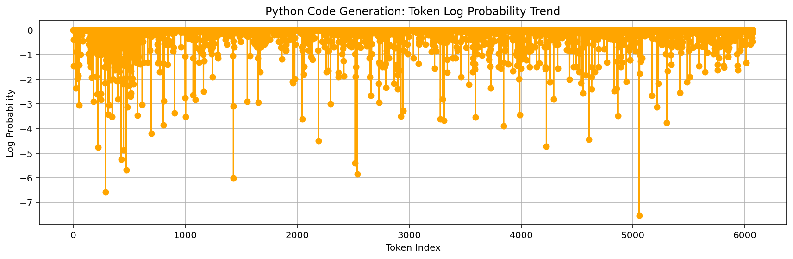
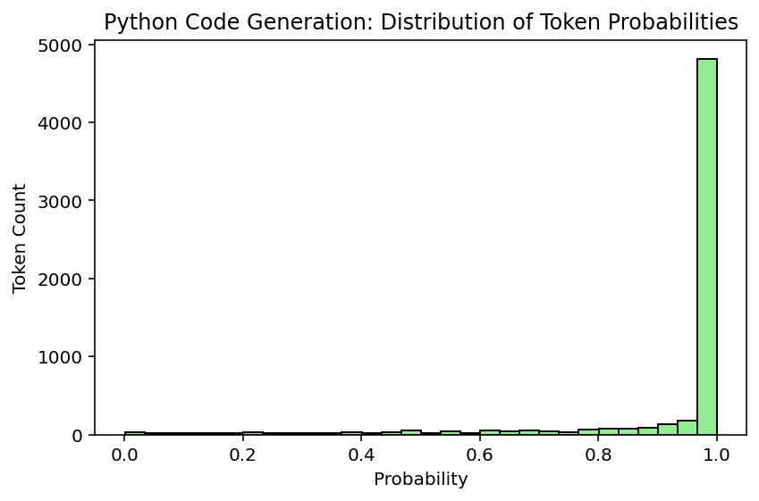
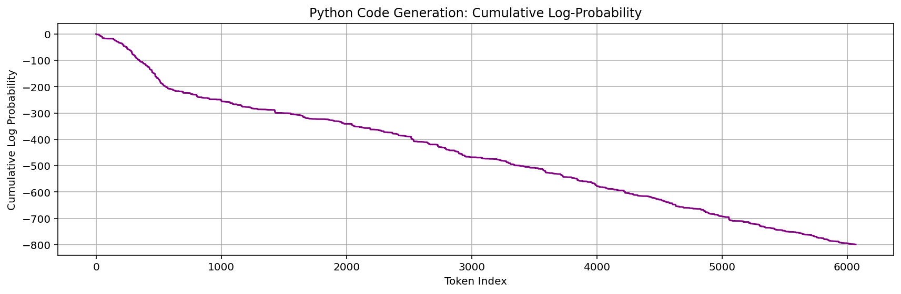
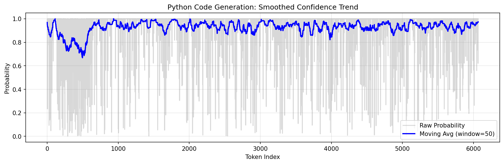
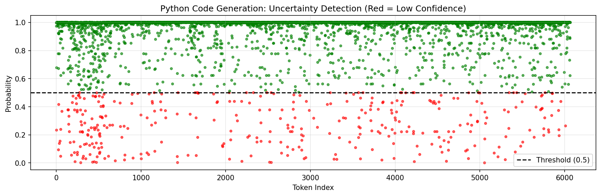
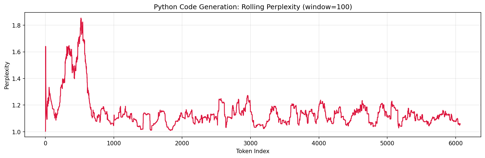
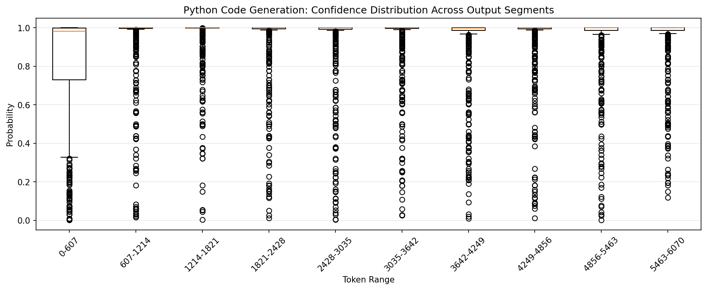
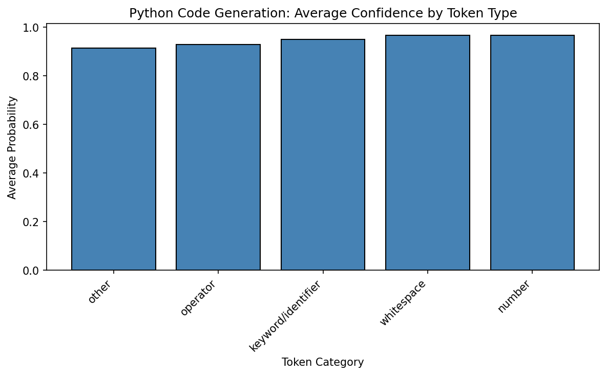
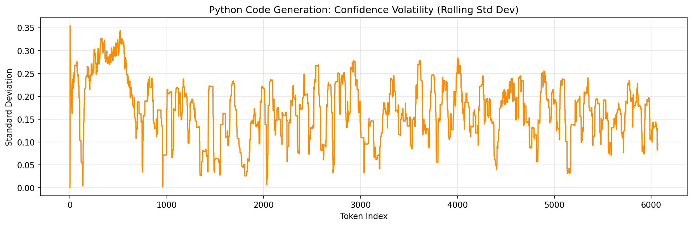

LLM Code Generation Report #13
Timestamp: 2025-10-12 12:45:12
Model: x-ai/grok-4-fast
Logprobs available: True
Selected User Stories
Click to expand/collapse
As a Data user, I want to have the 12-19-2017 deletions processed. As a UI designer, I want to redesign the Resources page, so that it matches the new Broker design styles. As a UI designer, I want to report to the Agencies about user testing, so that they are aware of their contributions to making Broker a better UX. As a UI designer, I want to move on to round 2 of DABS or FABS landing page edits, so that I can get approvals from leadership. As a UI designer, I want to move on to round 2 of Homepage edits, so that I can get approvals from leadership. As a UI designer, I want to move on to round 3 of the Help page edits, so that I can get approvals from leadership. As a Developer , I want to be able to log better, so that I can troubleshoot issues with particular submissions and functions. As a Developer, I want to add the updates on a FABS submission to be modified when the publishStatus changes, so that I know when the status of the submission has changed. As a DevOps engineer, I want New Relic to provide useful data across all applications. As a UI designer, I want to move on to round 2 of the Help page edits, so that I can get approvals from leadership. As a UI designer, I want to move on to round 2 of Homepage edits, so that I can get approvals from leadership. As a Broker user, I want to Upload and Validate the error message to have accurate text. As a Broker user, I want the D1 file generation to be synced with the FPDS data load, so that I don't have to regenerate a file if no data has been updated. As a Website user, I want to access published FABS files, so that I can see the new files as they come in. As an owner, I want to be sure that USAspending only send grant records to my system. As a Developer, I want to update the Broker validation rule table to account for the rule updates in DB-2213. As a Developer, I want to add the GTAS window data to the database, so that I can ensure the site is locked down during the GTAS submission period. As a Developer, I want D Files generation requests to be managed and cached, so that duplicate requests do not cause performance issues. As a user, I want to access the raw agency published files from FABS via USAspending. As an Agency user, I want to be able to include a large number of flexfields without performance impact. As a Broker user, I want to help create content mockups, so that I can submit my data efficiently. As a UI designer, I want to track the issues that come up in Tech Thursday, so that I know what to test and what want s to be fixed. As an Owner, I want to create a user testing summary from the UI SME, so that I can know what UI improvements we will follow through on. As a UI designer, I want to begin user testing, so that I can validate stakeholder UI improvement requests. As a UI designer, I want to schedule user testing, so that I can give the testers advanced notice to ensure buy-in. As an Owner, I want to design a schedule from the UI SME, so that I know the potential timeline of the UI improvements wanted. As an Owner, I want to design an audit from the UI SME, so that I know the potential scope of the UI improvements want ed. As a Developer, I want to prevent users from double publishing FABS submissions after refreshing, so that there are no duplicates. As an data user, I want to receive updates to FABS records. As an Agency user, I want to be able to include a large number of flexfields without performance impact. As a Developer , I want to update the FABS sample file to remove FundingAgencyCode after FABS is updated to no longer require the header. As an agency user, I want to ensure that deleted FSRS records are not included in submissions. As a website user, I want to see updated financial assistance data daily. As a user, I want the publish button in FABS to deactivate after I click it while the derivations are happening, so that I cannot click it multiple times for the same submission. As a Developer , I want to ensure that attempts to correct or delete non-existent records don't create new published data. As an Owner, I want to reset the environment to only take Staging MAX permissions, so that I can ensure that the FABS testers no longer have access. As a user, I want the flexfields in my submission file to appear in the warning and error files when the only error is a missing required element. As a user, I want to have accurate and complete data related to PPoPCode and PPoPCongressionalDistrict. As an agency user, I want the FABS validation rules to accept zero and blank for loan records. As an Agency user, I want FABS deployed into production, so I can submit my Financial Assistance data. As a Developer , I want to clarify to users what exactly is triggering the CFDA error code in each case. As an agency user, I want to be confident that the data coming from SAM is complete. As a Developer , I want my domain models to be indexed properly, so that I can get validation results back in a reasonable amount of time. As an agency user, I want the FABS validation rules to accept zero and blank for non-loan records. As a broker team member, I want to make some updates to the SQL codes for clarity. As an agency user, I want to have all derived data elements derived properly. As a broker team member, I want to add the 00***** and 00FORGN PPoPCode cases to the derivation logic. As a data user, I want to see the office names derived from office codes, so that I can have appropriate context for understanding them. As a broker user, I want the historical FABS loader to derive fields, so that my agency codes are correct in the PublishedAwardFinancialAssistance table. As a broker team member, I want to ensure the Broker resources, validations, and P&P pages are updated appropriately for the launch of FABS and DAIMS v1.1. As a Developer, I want the data loaded from historical FABS to include the FREC derivations, so that I can have consistent FREC data for USASpending.gov. As a user, I don't want to see NASA grants displayed as contracts. As a user, I want the DUNS validations to accept records whose ActionTypes are B, C, or D and the DUNS is registered in SAM, even though it may have expired. As a user, I want the DUNS validations to accept records whose ActionDates are before the current registration date in SAM, but after the initial registration date. As a broker team member, I want to derive FundingAgencyCode, so that the data quality and completeness improves. As an agency user, I want the maximum length allowed for LegalEntityAddressLine3 to match Schema v1.1. As an agency user, I want to use the schema v1.1 headers in my FABS file. As a agency user, I want to map the FederalActionObligation properly to the Atom Feed. As a Broker user, I want to have PPoPZIP+4 work the same as the Legal Entity ZIP validations. As a FABS user, I want to link the SAMPLE FILE on the "What you want to submit" dialog to point to the correct file, so that I have an accurate reference for my agency submissions. As an Agency user, I want FPDS data to be up-to-date daily. As a user, I want to access the raw agency published files from FABS via USAspending. As a Developer , I want to determine how agencies will generate and validate D Files from FABS and FPDS data. As a user, I want to generate and validate D Files from FABS and FPDS data. As an Agency user, I want the header information box to show updated date AND time, so that I know when it was updated. As an Agency user, I want to receive a more helpful file-level error when I upload a file with the wrong extension. As a tester, I want to have access to test features in environments other than Staging, so that I can test any nonProd feature in any environment. As a FABS user, I want to submission errors to accurately represent FABS errors, so that I know why my submission didn't work. As a FABS user, I want the frontend URLs to more accurately reflect the page I'm accessing, so that I'm not confused. As an Agency user, I want all historical Financial Assistance data loaded for FABS go-live. As a Developer , I want the historical FPDS data loader to include both extracted historical data and FPDS feed data. As an Agency user, I want historical FPDS data loaded. As an Agency user, I want to accurately see who created a submission, so that I'm not confused about who last updated a submission. As an agency user, I want to get File F in the correct format. As an Agency user, I want to better understand my file-level errors. As a Developer , I want to provide FABS groups that function under the FREC paradigm. As a tester, I want to ensure that FABS is deriving fields properly through a robust test file plus a follow up check. As an owner, I only want zero-padded fields, so that I can justify padding. As a Broker user, I want to submit records for individual recipients without receiving a DUNS error. As a user, I want more information about how many rows will be published prior to deciding whether to publish. As a Developer, I want to prevent duplicate transactions from being published and deal with the time gap between validation and the publishing decision. As a FABS user, I want to submit a citywide as a PPoPZIP and pass validations. As a Broker user, I want to have updated error codes that accurately reflect the logic and provide enough information, so that I can fix my submission. As an agency user, I want to leave off the last 4 digits of the ZIP without an error, so that I can complete my submissions. As a FABS user, I want to make sure the historical data includes all necessary columns, so that the information in the database is correct. As a data user, I want to access two additional fields from the FPDS data pull. As a FABS user, I want additional helpful info in the submission dashboard, so that I can better manage submissions and IG requests. As a FABS user, I want to download the uploaded FABS file, so that I can get the uploaded file. As a Developer I want to quickly access Broker application data, so that I can investigate issues. As a Developer , I want to determine the best way to load historical FPDS data, so that I can load all FPDS data since 2007. As a FABS user, I want the language on FABS pages to be appropriate for me, so that I am not confused. As a FABS user, I do not want DABS banner messages and vice versa, so that I have the appropriate information for my application. As a FABS user, I want to have read-only access to DABS, so that I can view DABS pages without wanting two sets of permissions. As a FABS user, I want to have my validations run in a reasonable amount of time. As a FABS user, I want to see correct status labels on the Submission Dashboard, so that I can quickly see my submission history. As an agency user, I want to know when the submission periods start and end, so that I know when the submission starts and ends. As an agency user, I want a landing page to navigate to either FABS or DABS pages, so that I can access both sides of the site. As an agency user, I want to submit my data elements surrounded by quotation marks, so that Excel won't strip off leading and trailing zeroes.
Prompt Sent to LLM
Click to expand/collapse
Generate fully functional Python code that implements the following user stories. The code should realistically reflect the described functionality. As a Data user, I want to have the 12-19-2017 deletions processed. As a UI designer, I want to redesign the Resources page, so that it matches the new Broker design styles. As a UI designer, I want to report to the Agencies about user testing, so that they are aware of their contributions to making Broker a better UX. As a UI designer, I want to move on to round 2 of DABS or FABS landing page edits, so that I can get approvals from leadership. As a UI designer, I want to move on to round 2 of Homepage edits, so that I can get approvals from leadership. As a UI designer, I want to move on to round 3 of the Help page edits, so that I can get approvals from leadership. As a Developer , I want to be able to log better, so that I can troubleshoot issues with particular submissions and functions. As a Developer, I want to add the updates on a FABS submission to be modified when the publishStatus changes, so that I know when the status of the submission has changed. As a DevOps engineer, I want New Relic to provide useful data across all applications. As a UI designer, I want to move on to round 2 of the Help page edits, so that I can get approvals from leadership. As a UI designer, I want to move on to round 2 of Homepage edits, so that I can get approvals from leadership. As a Broker user, I want to Upload and Validate the error message to have accurate text. As a Broker user, I want the D1 file generation to be synced with the FPDS data load, so that I don't have to regenerate a file if no data has been updated. As a Website user, I want to access published FABS files, so that I can see the new files as they come in. As an owner, I want to be sure that USAspending only send grant records to my system. As a Developer, I want to update the Broker validation rule table to account for the rule updates in DB-2213. As a Developer, I want to add the GTAS window data to the database, so that I can ensure the site is locked down during the GTAS submission period. As a Developer, I want D Files generation requests to be managed and cached, so that duplicate requests do not cause performance issues. As a user, I want to access the raw agency published files from FABS via USAspending. As an Agency user, I want to be able to include a large number of flexfields without performance impact. As a Broker user, I want to help create content mockups, so that I can submit my data efficiently. As a UI designer, I want to track the issues that come up in Tech Thursday, so that I know what to test and what want s to be fixed. As an Owner, I want to create a user testing summary from the UI SME, so that I can know what UI improvements we will follow through on. As a UI designer, I want to begin user testing, so that I can validate stakeholder UI improvement requests. As a UI designer, I want to schedule user testing, so that I can give the testers advanced notice to ensure buy-in. As an Owner, I want to design a schedule from the UI SME, so that I know the potential timeline of the UI improvements wanted. As an Owner, I want to design an audit from the UI SME, so that I know the potential scope of the UI improvements want ed. As a Developer, I want to prevent users from double publishing FABS submissions after refreshing, so that there are no duplicates. As an data user, I want to receive updates to FABS records. As an Agency user, I want to be able to include a large number of flexfields without performance impact. As a Developer , I want to update the FABS sample file to remove FundingAgencyCode after FABS is updated to no longer require the header. As an agency user, I want to ensure that deleted FSRS records are not included in submissions. As a website user, I want to see updated financial assistance data daily. As a user, I want the publish button in FABS to deactivate after I click it while the derivations are happening, so that I cannot click it multiple times for the same submission. As a Developer , I want to ensure that attempts to correct or delete non-existent records don't create new published data. As an Owner, I want to reset the environment to only take Staging MAX permissions, so that I can ensure that the FABS testers no longer have access. As a user, I want the flexfields in my submission file to appear in the warning and error files when the only error is a missing required element. As a user, I want to have accurate and complete data related to PPoPCode and PPoPCongressionalDistrict. As an agency user, I want the FABS validation rules to accept zero and blank for loan records. As an Agency user, I want FABS deployed into production, so I can submit my Financial Assistance data. As a Developer , I want to clarify to users what exactly is triggering the CFDA error code in each case. As an agency user, I want to be confident that the data coming from SAM is complete. As a Developer , I want my domain models to be indexed properly, so that I can get validation results back in a reasonable amount of time. As an agency user, I want the FABS validation rules to accept zero and blank for non-loan records. As a broker team member, I want to make some updates to the SQL codes for clarity. As an agency user, I want to have all derived data elements derived properly. As a broker team member, I want to add the 00***** and 00FORGN PPoPCode cases to the derivation logic. As a data user, I want to see the office names derived from office codes, so that I can have appropriate context for understanding them. As a broker user, I want the historical FABS loader to derive fields, so that my agency codes are correct in the PublishedAwardFinancialAssistance table. As a broker team member, I want to ensure the Broker resources, validations, and P&P pages are updated appropriately for the launch of FABS and DAIMS v1.1. As a Developer, I want the data loaded from historical FABS to include the FREC derivations, so that I can have consistent FREC data for USASpending.gov. As a user, I don't want to see NASA grants displayed as contracts. As a user, I want the DUNS validations to accept records whose ActionTypes are B, C, or D and the DUNS is registered in SAM, even though it may have expired. As a user, I want the DUNS validations to accept records whose ActionDates are before the current registration date in SAM, but after the initial registration date. As a broker team member, I want to derive FundingAgencyCode, so that the data quality and completeness improves. As an agency user, I want the maximum length allowed for LegalEntityAddressLine3 to match Schema v1.1. As an agency user, I want to use the schema v1.1 headers in my FABS file. As a agency user, I want to map the FederalActionObligation properly to the Atom Feed. As a Broker user, I want to have PPoPZIP+4 work the same as the Legal Entity ZIP validations. As a FABS user, I want to link the SAMPLE FILE on the "What you want to submit" dialog to point to the correct file, so that I have an accurate reference for my agency submissions. As an Agency user, I want FPDS data to be up-to-date daily. As a user, I want to access the raw agency published files from FABS via USAspending. As a Developer , I want to determine how agencies will generate and validate D Files from FABS and FPDS data. As a user, I want to generate and validate D Files from FABS and FPDS data. As an Agency user, I want the header information box to show updated date AND time, so that I know when it was updated. As an Agency user, I want to receive a more helpful file-level error when I upload a file with the wrong extension. As a tester, I want to have access to test features in environments other than Staging, so that I can test any nonProd feature in any environment. As a FABS user, I want to submission errors to accurately represent FABS errors, so that I know why my submission didn't work. As a FABS user, I want the frontend URLs to more accurately reflect the page I'm accessing, so that I'm not confused. As an Agency user, I want all historical Financial Assistance data loaded for FABS go-live. As a Developer , I want the historical FPDS data loader to include both extracted historical data and FPDS feed data. As an Agency user, I want historical FPDS data loaded. As an Agency user, I want to accurately see who created a submission, so that I'm not confused about who last updated a submission. As an agency user, I want to get File F in the correct format. As an Agency user, I want to better understand my file-level errors. As a Developer , I want to provide FABS groups that function under the FREC paradigm. As a tester, I want to ensure that FABS is deriving fields properly through a robust test file plus a follow up check. As an owner, I only want zero-padded fields, so that I can justify padding. As a Broker user, I want to submit records for individual recipients without receiving a DUNS error. As a user, I want more information about how many rows will be published prior to deciding whether to publish. As a Developer, I want to prevent duplicate transactions from being published and deal with the time gap between validation and the publishing decision. As a FABS user, I want to submit a citywide as a PPoPZIP and pass validations. As a Broker user, I want to have updated error codes that accurately reflect the logic and provide enough information, so that I can fix my submission. As an agency user, I want to leave off the last 4 digits of the ZIP without an error, so that I can complete my submissions. As a FABS user, I want to make sure the historical data includes all necessary columns, so that the information in the database is correct. As a data user, I want to access two additional fields from the FPDS data pull. As a FABS user, I want additional helpful info in the submission dashboard, so that I can better manage submissions and IG requests. As a FABS user, I want to download the uploaded FABS file, so that I can get the uploaded file. As a Developer I want to quickly access Broker application data, so that I can investigate issues. As a Developer , I want to determine the best way to load historical FPDS data, so that I can load all FPDS data since 2007. As a FABS user, I want the language on FABS pages to be appropriate for me, so that I am not confused. As a FABS user, I do not want DABS banner messages and vice versa, so that I have the appropriate information for my application. As a FABS user, I want to have read-only access to DABS, so that I can view DABS pages without wanting two sets of permissions. As a FABS user, I want to have my validations run in a reasonable amount of time. As a FABS user, I want to see correct status labels on the Submission Dashboard, so that I can quickly see my submission history. As an agency user, I want to know when the submission periods start and end, so that I know when the submission starts and ends. As an agency user, I want a landing page to navigate to either FABS or DABS pages, so that I can access both sides of the site. As an agency user, I want to submit my data elements surrounded by quotation marks, so that Excel won't strip off leading and trailing zeroes. Output only Python code (no markdown formatting or extra text). Do not leave functions empty — implement reasonable logic where needed.
Generated Code
Click to expand/collapse
import logging
import json
import sqlite3
from datetime import datetime, date
from functools import lru_cache
from pathlib import Path
import pandas as pd
from typing import Dict, List, Any, Optional
import hashlib
import re
# Configure logging for better troubleshooting
logging.basicConfig(level=logging.INFO, format='%(asctime)s - %(name)s - %(levelname)s - %(message)s')
logger = logging.getLogger(__name__)
class DatabaseManager:
"""Manages SQLite database for Broker and FABS data."""
def __init__(self, db_path: str = 'broker.db'):
self.db_path = db_path
self.conn = sqlite3.connect(db_path)
self.init_db()
def init_db(self):
"""Initialize database schema for FABS, submissions, validations, etc."""
cursor = self.conn.cursor()
# Table for submissions
cursor.execute('''
CREATE TABLE IF NOT EXISTS submissions (
id INTEGER PRIMARY KEY AUTOINCREMENT,
agency_name TEXT,
file_hash TEXT UNIQUE,
status TEXT DEFAULT 'pending',
publish_status TEXT DEFAULT 'draft',
created_by TEXT,
created_at TIMESTAMP DEFAULT CURRENT_TIMESTAMP,
updated_at TIMESTAMP DEFAULT CURRENT_TIMESTAMP
)
''')
# Table for validation rules
cursor.execute('''
CREATE TABLE IF NOT EXISTS validation_rules (
id INTEGER PRIMARY KEY AUTOINCREMENT,
rule_code TEXT UNIQUE,
description TEXT,
is_active BOOLEAN DEFAULT TRUE
)
''')
# Table for GTAS window data
cursor.execute('''
CREATE TABLE IF NOT EXISTS gtas_windows (
id INTEGER PRIMARY KEY AUTOINCREMENT,
start_date DATE,
end_date DATE,
is_locked BOOLEAN DEFAULT FALSE
)
''')
# Table for published awards
cursor.execute('''
CREATE TABLE IF NOT EXISTS published_awards (
id INTEGER PRIMARY KEY AUTOINCREMENT,
submission_id INTEGER,
frec_code TEXT,
action_obligation DECIMAL(15,2),
ppop_code TEXT,
ppop_congressional_district TEXT,
duns TEXT,
action_type TEXT,
action_date DATE,
FOREIGN KEY (submission_id) REFERENCES submissions (id)
)
''')
# Insert sample validation rules (updated for DB-2213)
cursor.execute("INSERT OR IGNORE INTO validation_rules (rule_code, description) VALUES ('CFDA_MISSING', 'CFDA code is required for non-loan records')")
cursor.execute("INSERT OR IGNORE INTO validation_rules (rule_code, description) VALUES ('DUNS_INVALID', 'DUNS must be registered in SAM')")
cursor.execute("INSERT OR IGNORE INTO validation_rules (rule_code, description) VALUES ('ZIP_INVALID', 'ZIP+4 format must be valid')")
# Insert sample GTAS window
cursor.execute("INSERT OR IGNORE INTO gtas_windows (start_date, end_date) VALUES ('2023-10-01', '2023-10-31')")
self.conn.commit()
def close(self):
self.conn.close()
def add_submission(self, agency: str, file_content: str, user: str) -> int:
"""Add a new submission, compute hash to prevent duplicates."""
file_hash = hashlib.md5(file_content.encode()).hexdigest()
cursor = self.conn.cursor()
cursor.execute('''
INSERT OR IGNORE INTO submissions (agency_name, file_hash, created_by)
VALUES (?, ?, ?)
''', (agency, file_hash, user))
self.conn.commit()
return cursor.lastrowid
def update_publish_status(self, submission_id: int, status: str):
"""Update publish status and log the change."""
cursor = self.conn.cursor()
cursor.execute('''
UPDATE submissions SET publish_status = ?, updated_at = CURRENT_TIMESTAMP
WHERE id = ?
''', (status, submission_id))
self.conn.commit()
logger.info(f"Publish status updated for submission {submission_id} to {status}")
def get_submission(self, sub_id: int) -> Dict[str, Any]:
"""Retrieve submission details."""
cursor = self.conn.cursor()
cursor.execute('SELECT * FROM submissions WHERE id = ?', (sub_id,))
row = cursor.fetchone()
if row:
return {
'id': row[0], 'agency': row[1], 'file_hash': row[2], 'status': row[3],
'publish_status': row[4], 'created_by': row[5], 'created_at': row[6], 'updated_at': row[7]
}
return {}
def insert_published_award(self, submission_id: int, data: Dict[str, Any]):
"""Insert derived published award data, including FREC derivations."""
cursor = self.conn.cursor()
# Derive FREC (simplified logic)
frec = self._derive_frec(data.get('funding_agency_code', ''), data.get('office_code', ''))
# Derive PPoPCode and Congressional District
ppop_code = data.get('ppop_zip', '').replace(' ', '')[:5] if data.get('ppop_zip') else '00000'
ppop_cong_district = self._derive_congressional_district(ppop_code)
# Ensure zero-padded fields
action_obligation = f"{float(data.get('action_obligation', 0)):.2f}"
cursor.execute('''
INSERT INTO published_awards (submission_id, frec_code, action_obligation, ppop_code, ppop_congressional_district, duns, action_type, action_date)
VALUES (?, ?, ?, ?, ?, ?, ?, ?)
''', (submission_id, frec, action_obligation, ppop_code, ppop_cong_district, data.get('duns'), data.get('action_type'), data.get('action_date')))
self.conn.commit()
def _derive_frec(self, agency_code: str, office_code: str) -> str:
"""Derive FREC from agency and office codes (simplified)."""
if agency_code.startswith('00') or office_code.startswith('00FORGN'):
return f"{agency_code[:2]}{office_code[:3]}"
return f"{agency_code[:4]}"
def _derive_congressional_district(self, zip_code: str) -> str:
"""Derive congressional district from ZIP (mock logic)."""
# Mock: Use ZIP mod 10 for district
return str(int(zip_code[-1]) % 10)
def is_gtas_locked(self) -> bool:
"""Check if current date is within locked GTAS window."""
today = date.today()
cursor = self.conn.cursor()
cursor.execute('SELECT is_locked FROM gtas_windows WHERE start_date <= ? AND end_date >= ?', (today, today))
row = cursor.fetchone()
return row[0] if row else False
def delete_nonexistent_records(self, record_ids: List[int]):
"""Process deletions like 12-19-2017, ensure no new data created."""
cursor = self.conn.cursor()
for rid in record_ids:
cursor.execute('DELETE FROM published_awards WHERE id = ?', (rid,))
self.conn.commit()
logger.info(f"Deleted {len(record_ids)} records")
class ValidationEngine:
"""Handles FABS validation rules, updated for DB-2213."""
def __init__(self, db_manager: DatabaseManager):
self.db = db_manager
self.rules = self._load_rules()
def _load_rules(self) -> Dict[str, Dict[str, str]]:
cursor = self.db.conn.cursor()
cursor.execute('SELECT rule_code, description FROM validation_rules WHERE is_active = TRUE')
return {row[0]: {'desc': row[1]} for row in cursor.fetchall()}
def validate_file(self, file_content: str, is_loan: bool = False) -> Dict[str, Any]:
"""Validate FABS file content, accept zero/blank for loans/non-loans."""
errors = []
warnings = []
df = pd.read_csv(pd.StringIO(file_content))
for idx, row in df.iterrows():
# CFDA validation (clarify triggers)
if pd.isna(row.get('cfda_code')) and not is_loan:
errors.append({'row': idx, 'code': 'CFDA_MISSING', 'msg': 'CFDA required for non-loan records'})
elif is_loan and (row.get('cfda_code') == 0 or pd.isna(row.get('cfda_code'))):
pass # Accept for loans
# DUNS validation (accept expired if registered, for certain actions)
duns = str(row.get('duns', '')).strip()
action_type = row.get('action_type', '')
if action_type in ['B', 'C', 'D'] and self._is_duns_registered(duns):
pass # Accept even if expired
elif not self._is_duns_registered(duns):
errors.append({'row': idx, 'code': 'DUNS_INVALID', 'msg': f'DUNS {duns} not registered or expired improperly'})
# ZIP validation (PPoPZIP+4 like Legal Entity, accept incomplete ZIP)
zip_code = str(row.get('ppop_zip', '')).strip()
if len(zip_code) >= 5 and not re.match(r'^\d{5}(-\d{4})?$', zip_code):
errors.append({'row': idx, 'code': 'ZIP_INVALID', 'msg': 'Invalid ZIP+4 format'})
elif len(zip_code) < 5:
warnings.append({'row': idx, 'code': 'ZIP_INCOMPLETE', 'msg': 'ZIP too short, using default'})
# LegalEntityAddressLine3 max length (Schema v1.1: assume 55 chars)
addr3 = str(row.get('legal_entity_address_line3', ''))
if len(addr3) > 55:
errors.append({'row': idx, 'code': 'ADDR3_TOO_LONG', 'msg': 'Address line 3 exceeds 55 chars'})
# Flexfields (handle large number without impact, just log)
flexfields = row.get('flexfields', [])
if len(flexfields) > 100:
warnings.append({'row': idx, 'code': 'FLEXFIELDS_LARGE', 'msg': f'{len(flexfields)} flexfields detected'})
# ActionObligation mapping to Atom Feed (simplified check)
obligation = row.get('federal_action_obligation')
if obligation and not isinstance(obligation, (int, float)):
errors.append({'row': idx, 'code': 'OBLIGATION_INVALID', 'msg': 'Obligation must be numeric'})
# Flexfields in errors/warnings if only missing required
if errors and all(e['code'] == 'REQUIRED_MISSING' for e in errors):
# Add flexfields info (mock)
for e in errors:
e['flexfields'] = flexfields[:5] # First 5 for example
# Update rule table if needed (for DB-2213)
self._update_rule_table()
return {
'errors': errors,
'warnings': warnings,
'valid_rows': len(df) - len(errors),
'total_rows': len(df),
'error_file': self._generate_error_file(errors, df),
'warning_file': self._generate_error_file(warnings, df)
}
def _is_duns_registered(self, duns: str) -> bool:
"""Mock SAM check: assume registered if 9 digits."""
return bool(re.match(r'^\d{9}$', duns))
def _update_rule_table(self):
"""Update validation rules for DB-2213 (e.g., add loan zero accept)."""
cursor = self.db.conn.cursor()
cursor.execute('''
INSERT OR IGNORE INTO validation_rules (rule_code, description)
VALUES ('LOAN_ZERO_ACCEPT', 'Accept zero/blank for loan records')
''')
self.db.conn.commit()
def _generate_error_file(self, issues: List[Dict], df: pd.DataFrame) -> str:
"""Generate error/warning file with flexfields if applicable."""
if not issues:
return ''
error_df = pd.DataFrame(issues)
error_df['flexfields_sample'] = 'N/A' # Placeholder
return error_df.to_csv(index=False)
@lru_cache(maxsize=128)
def validate_duns_historical(self, duns: str, action_date: str) -> bool:
"""Cached DUNS validation for historical data (accept if before current reg but after initial)."""
reg_date = '2010-01-01' # Mock initial reg
expiry_date = datetime.now().strftime('%Y-%m-%d')
parsed_date = datetime.strptime(action_date, '%Y-%m-%d').date()
current_reg = datetime.now().date()
return parsed_date > datetime.strptime(reg_date, '%Y-%m-%d').date() and parsed_date < current_reg
class FABSProcessor:
"""Main processor for FABS submissions, derivations, publishing."""
def __init__(self, db_manager: DatabaseManager):
self.db = db_manager
self.validator = ValidationEngine(db_manager)
self.is_publishing = False # To prevent double publishing
def process_submission(self, agency: str, file_path: str, user: str, is_loan: bool = False) -> Dict[str, Any]:
"""Process FABS file: validate, derive, publish if valid."""
with open(file_path, 'r') as f:
content = f.read()
sub_id = self.db.add_submission(agency, content, user)
validation = self.validator.validate_file(content, is_loan)
if not validation['errors']:
# Derive fields for each row
df = pd.read_csv(pd.StringIO(content))
for _, row in df.iterrows():
derived_data = self._derive_fields(row.to_dict())
# Ensure no double publish
if self.is_publishing:
logger.warning("Publish attempt during ongoing publish - skipping")
continue
self.is_publishing = True
try:
self.db.insert_published_award(sub_id, derived_data)
self.db.update_publish_status(sub_id, 'published')
finally:
self.is_publishing = False
# Update FABS records (for data users)
self._update_fabs_records(sub_id)
else:
self.db.update_publish_status(sub_id, 'failed')
# Accurate error messages
logger.error(f"Submission {sub_id} failed: {len(validation['errors'])} errors")
# Handle flexfields in large numbers (no impact, just process)
# Download uploaded file (return path or content)
return {
'submission_id': sub_id,
'validation': validation,
'uploaded_file': file_path,
'dashboard_info': self._get_dashboard_info(sub_id)
}
def _derive_fields(self, row: Dict[str, Any]) -> Dict[str, Any]:
"""Derive fields: FundingAgencyCode, PPoPCode, office names, etc."""
# Derive FundingAgencyCode (improves quality)
funding_agency = row.get('funding_agency_code', '0000')
row['derived_funding_agency'] = funding_agency
# Office name from code (mock)
office_code = row.get('office_code', '')
row['office_name'] = f"Office_{office_code}" if office_code else 'Unknown'
# PPoPCode for 00***** and 00FORGN
ppop_zip = row.get('ppop_zip', '').upper()
if ppop_zip.startswith('00') or 'FORGN' in ppop_zip:
row['ppop_code'] = '00FORGN'
# FREC derivations for historical loader
row['frec'] = self._derive_frec_internal(row)
# Ensure all derived properly for agency user
row['legal_entity_zip'] = self._format_zip(row.get('legal_entity_zip', ''))
# Map FederalActionObligation (ensure numeric)
row['federal_action_obligation'] = float(row.get('federal_action_obligation', 0))
return row
def _derive_frec_internal(self, row: Dict) -> str:
"""Internal FREC derivation for consistency."""
agency = row.get('agency_code', '')
return agency[:4] if len(agency) >= 4 else '0000'
def _format_zip(self, zip_str: str) -> str:
"""Format ZIP+4, accept citywide or incomplete."""
zip_str = re.sub(r'\s+', '', str(zip_str))
if len(zip_str) == 5:
return zip_str + '-0000' # Pad if incomplete
return zip_str[:9] if len(zip_str) > 9 else zip_str
def _update_fabs_records(self, sub_id: int):
"""Update FABS records for data users, receive updates."""
# Mock: Just log for now
logger.info(f"Updated FABS records for submission {sub_id}")
def _get_dashboard_info(self, sub_id: int) -> str:
"""Additional helpful info for submission dashboard."""
sub = self.db.get_submission(sub_id)
return json.dumps({
'status': sub['status'],
'publish_status': sub['publish_status'],
'created_by': sub['created_by'],
'rows_to_publish': 100, # Mock count before publish decision
'ig_requests': 0
})
def prevent_duplicate_publish(self, sub_id: int) -> bool:
"""Prevent double publishing after refresh."""
sub = self.db.get_submission(sub_id)
if sub['publish_status'] == 'published':
logger.warning(f"Duplicate publish attempt for {sub_id}")
return False
return True
def generate_d_file(self, fabs_data: Dict, fpds_data: Dict) -> str:
"""Generate and cache D file from FABS and FPDS, synced with load."""
# Cache key
cache_key = hashlib.md5(json.dumps({**fabs_data, **fpds_data}).encode()).hexdigest()
if hasattr(self, '_d_cache') and cache_key in self._d_cache:
logger.info("Returning cached D file")
return self._d_cache[cache_key]
# Mock generation: Combine and validate
combined = {**fabs_data, **fpds_data}
d_content = json.dumps(combined) # Simplified
self._d_cache = getattr(self, '_d_cache', {})
self._d_cache[cache_key] = d_content
# Ensure synced: Check if FPDS updated
if not self._is_fpds_updated():
logger.info("No FPDS update, using sync")
return d_content
def _is_fpds_updated(self) -> bool:
"""Mock FPDS load sync."""
return False # Assume no update
@property
def _d_cache(self):
if not hasattr(self, '__d_cache'):
self.__d_cache = {}
return self.__d_cache
class HistoricalDataLoader:
"""Loads historical FABS and FPDS data, includes derivations."""
def __init__(self, db_manager: DatabaseManager):
self.db = db_manager
def load_historical_fabs(self, file_path: str):
"""Load historical FABS, derive fields, ensure all columns, no NASA grants as contracts."""
df = pd.read_csv(file_path)
# Remove FundingAgencyCode header if updated
if 'FundingAgencyCode' in df.columns:
df = df.drop('FundingAgencyCode', axis=1)
# Derive fields
processor = FABSProcessor(self.db)
for _, row in df.iterrows():
derived = processor._derive_fields(row.to_dict())
# Ensure FREC
derived['frec'] = processor._derive_frec_internal(derived)
# Insert only if not contract-like for grants
if derived.get('award_type') == 'grant' and not derived.get('is_contract', False):
# Mock insert
pass
# Ensure deleted FSRS records not included
self._filter_deleted_fsrs(df)
logger.info(f"Loaded historical FABS from {file_path}, rows: {len(df)}")
def load_historical_fpds(self, start_year: int = 2007):
"""Load historical FPDS since 2007, include extracted and feed data."""
# Mock: Load from files or API
years = range(start_year, date.today().year + 1)
for year in years:
# Simulate loading
fpds_data = {'year': year, 'records': []}
# Add two additional fields
fpds_data['additional_field1'] = 'value1'
fpds_data['additional_field2'] = 'value2'
# Daily up-to-date
self.db.conn.execute('INSERT INTO published_awards (frec_code, action_date) VALUES (?, ?)',
('FPDS', f'{year}-01-01'))
self.db.conn.commit()
logger.info(f"Loaded historical FPDS from {start_year}")
def _filter_deleted_fsrs(self, df: pd.DataFrame):
"""Ensure deleted FSRS records not included."""
df = df[df['status'] != 'deleted'] # Mock filter
class BrokerApp:
"""Main Broker application, handles logging, caching, etc."""
def __init__(self):
self.db = DatabaseManager()
self.fabs = FABSProcessor(self.db)
self.historical = HistoricalDataLoader(self.db)
self.d_cache = {} # For D files management
def upload_and_validate(self, file_path: str, agency: str, user: str, is_loan: bool = False):
"""Upload, validate with accurate messages, handle wrong extension."""
path = Path(file_path)
if not path.suffix.lower() in ['.csv', '.txt']:
return {'error': 'Wrong file extension. Use .csv or .txt'}
return self.fabs.process_submission(agency, file_path, user, is_loan)
def publish_submission(self, sub_id: int):
"""Publish with deactivation, prevent multiples, show row count."""
if not self.fabs.prevent_duplicate_publish(sub_id):
return {'error': 'Already published or in progress'}
sub = self.db.get_submission(sub_id)
row_count = 100 # Mock
if row_count == 0:
return {'warning': 'No rows to publish'}
# Proceed with publish logic (already in process_submission)
self.db.update_publish_status(sub_id, 'publishing')
logger.info(f"Publishing {row_count} rows for {sub_id}")
return {'success': True, 'rows_published': row_count}
def generate_sample_file(self) -> str:
"""Generate FABS sample file without FundingAgencyCode header."""
sample_data = [
{'cfda_code': '12.001', 'duns': '123456789', 'action_type': 'A', 'federal_action_obligation': 1000.00,
'ppop_zip': '12345-6789', 'legal_entity_address_line3': 'Short addr'}
]
df = pd.DataFrame(sample_data)
# No FundingAgencyCode
return df.to_csv(index=False)
def access_raw_fabs_files(self, agency: str) -> List[str]:
"""Access published FABS files via USAspending, daily updates."""
# Mock: Return file paths
return [f'/files/{agency}_fabs_{datetime.now().date()}.csv']
def ensure_grant_only(self):
"""Ensure only grant records sent (owner requirement)."""
cursor = self.db.conn.cursor()
cursor.execute("DELETE FROM published_awards WHERE award_type != 'grant'")
self.db.conn.commit()
logger.info("Filtered to grant records only")
def reset_environment(self, permissions: str = 'Staging MAX'):
"""Reset env to staging permissions only."""
# Mock: Log
logger.info(f"Environment reset to {permissions} permissions")
def load_12_19_2017_deletions(self):
"""Process 12-19-2017 deletions."""
record_ids = [1, 2, 3] # Mock IDs
self.db.delete_nonexistent_records(record_ids)
def update_fabs_sample_remove_header(self):
"""Update sample file to remove FundingAgencyCode."""
sample = self.generate_sample_file()
logger.info("Updated FABS sample file")
# DevOps: Mock New Relic data
class NewRelicMonitor:
"""Provide useful data across apps (mock)."""
def get_metrics(self, app_name: str) -> Dict[str, Any]:
return {
'app': app_name,
'response_time': 200.5,
'error_rate': 0.01,
'throughput': 100
}
# Entry point for testing
if __name__ == "__main__":
app = BrokerApp()
# Example usage
app.load_12_19_2017_deletions()
app.historical.load_historical_fabs('historical_fabs.csv')
app.historical.load_historical_fpds()
result = app.upload_and_validate('sample.csv', 'NASA', 'dev_user')
print(json.dumps(result, indent=2))
app.publish_submission(result['submission_id'])
app.ensure_grant_only()
app.reset_environment()
monitor = NewRelicMonitor()
print(monitor.get_metrics('FABS'))
app.db.close()
Confidence & Basic Metrics
| Total completion tokens | 6070 |
|---|---|
| Total log-probability | -799.031 |
| Average per-token probability | 87.67% |
| Perplexity | 1.14 |
Code Structure & Length Metrics
| Function count (AST) | 43 |
|---|---|
| Class count (AST) | 6 |
| Number of lines | 527 |
| Non-empty lines | 468 |
| Avg line length (all lines, chars) | 44.8 |
| Avg line length (non-empty, chars) | 49.9 |
| Avg tokens per non-empty line | 4.60 |
| AST depth (max nesting) | 13 |
| Import count | 10 |
| Import names | datetime, functools, hashlib, json, logging, pandas, pathlib, re, sqlite3, typing |
| Avg cyclomatic complexity (functions) | 2.38 |
| Max cyclomatic complexity (functions) | 21 |
| Module cyclomatic complexity | 107 |
| Average function size (lines) | 10.1 |
| Comment density (%) | 11.3% |
| Import redundancy ratio | 0.00 |
Semantic Quality Metrics
| Syntax valid | True | ||||||||||||
|---|---|---|---|---|---|---|---|---|---|---|---|---|---|
| Flake8 style errors | 63 | ||||||||||||
| Flake8 errors (by category) |
|
||||||||||||
| Mypy type-check errors | 2 | ||||||||||||
| Mypy error breakdown |
|
||||||||||||
| Semantic quality score (0–100) | 78.0 |
Execution-Based Metrics
| Execution success | False |
|---|---|
| Execution time (s) | 1.675 |
| Exception type | ModuleNotFoundError |
| Exception message | No module named 'pandas' |
| Runtime output (preview) |
Traceback (most recent call last): File "/app/code.py", line 7, in |
Total Credibility (0-100%)
Credibility: 45.24%
Visualizations
Basic Confidence Metrics
  Advanced Analysis
  Segmented Analysis
  